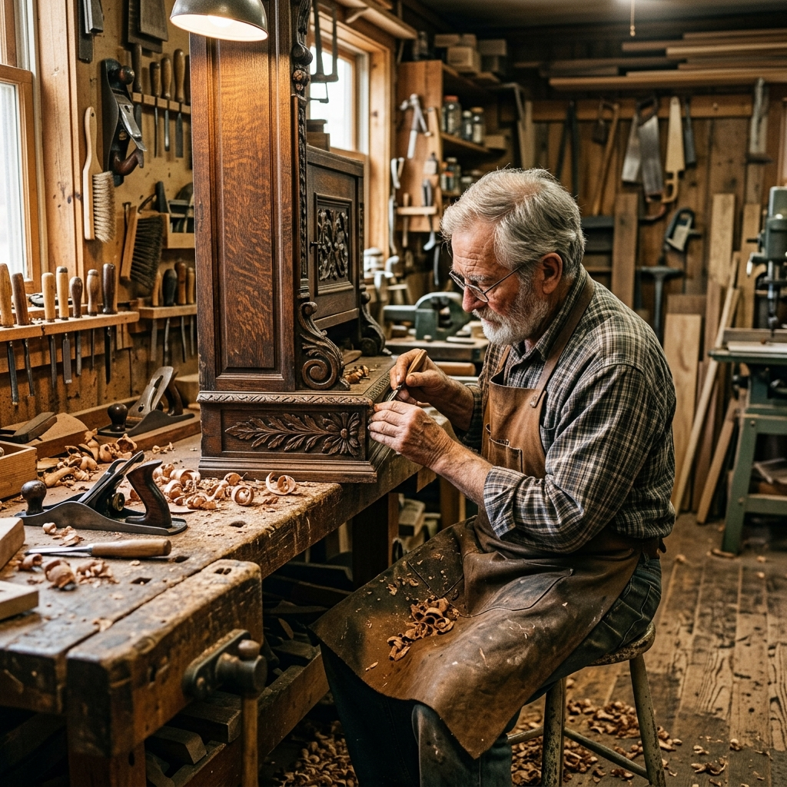
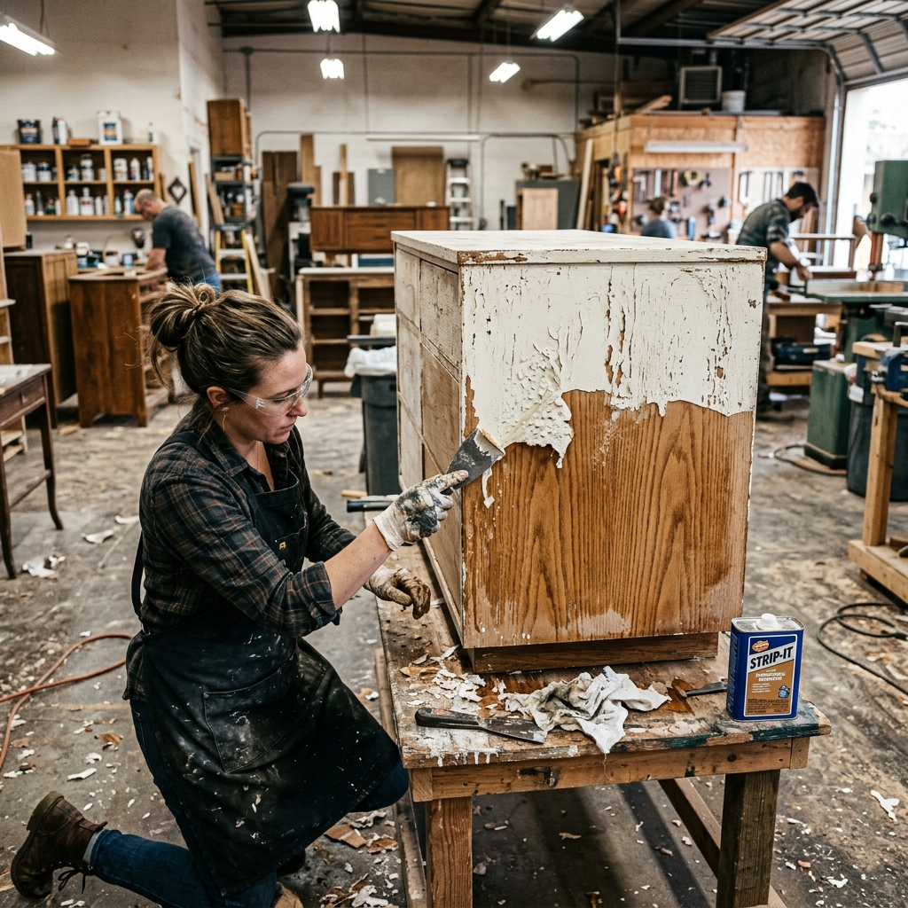
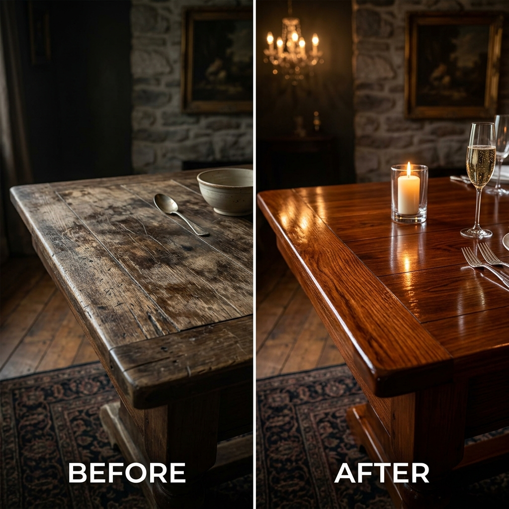

Expert Repair & Restoration
Breathe New Life Into Your Furniture
Step inside our Shoreditch studio and discover how traditional hand techniques and genuine care transform damaged or aged furniture into enduring works of art.
The Craftsman Difference
Hand-Tool Craftsmanship
Every repair uses period-appropriate tools — no shortcuts, no power-tool damage to delicate surfaces.
Period-Correct Materials
We source historically authentic veneers, fabrics, finishes and hardware to preserve original character.
Guaranteed Turnaround
We commit to a delivery window and honour it — with real-time updates throughout your project.
Free Collection & Return
We collect from anywhere in Greater London — fully insured, white-glove handling from door to door.
The Workshop at Work
Swipe through our craftsman studio — where every piece tells a story of careful hands and honest materials.

The Craftsman's Bench
Where every restoration begins — hand tools, patience, and passion.

Wood Restoration
Grain repair, colour matching, and French-polish finishing.

Antique Conservation
Period-correct materials for heirloom-quality results.

Upholstery Studio
Full re-upholstery from structural frame to fabric finish.

Detail Work
Hand-carved repairs and decorative restoration by eye.

The Finished Piece
Every item leaves the studio looking better than the day it was made.
Estimated Turnaround Times
We take the time needed to ensure perfection. Here is what to expect for our most common restoration services.
Basic Repair & Polish
Ideal for minor scratches, loose joints, or refreshing the finish on small items like chairs and side tables.
Full Upholstery
Includes complete stripping, structural repair, re-springing, and recovering for sofas and armchairs.
Antique Conservation
Meticulous restoration of heritage pieces using period-correct materials, veneers, and French polishing.
The Hands Behind the Work
Our small, dedicated team of master craftsmen bring decades of combined experience to every restoration project.
Thomas Wren
Head Restorer
20 years restoring period furniture across London's most prestigious private collections and auction houses.
Eleanor Marsh
Senior Upholsterer
Specialist in traditional upholstery techniques including hand-stitching, springing, and heritage fabric sourcing.
James Calloway
Antique Specialist
Trained conservator with expertise in French polishing, gilding, and authenticated period restoration methods.
Follow Our Work on Instagram
Daily behind-the-scenes, before & after reveals, and craft process videos.
